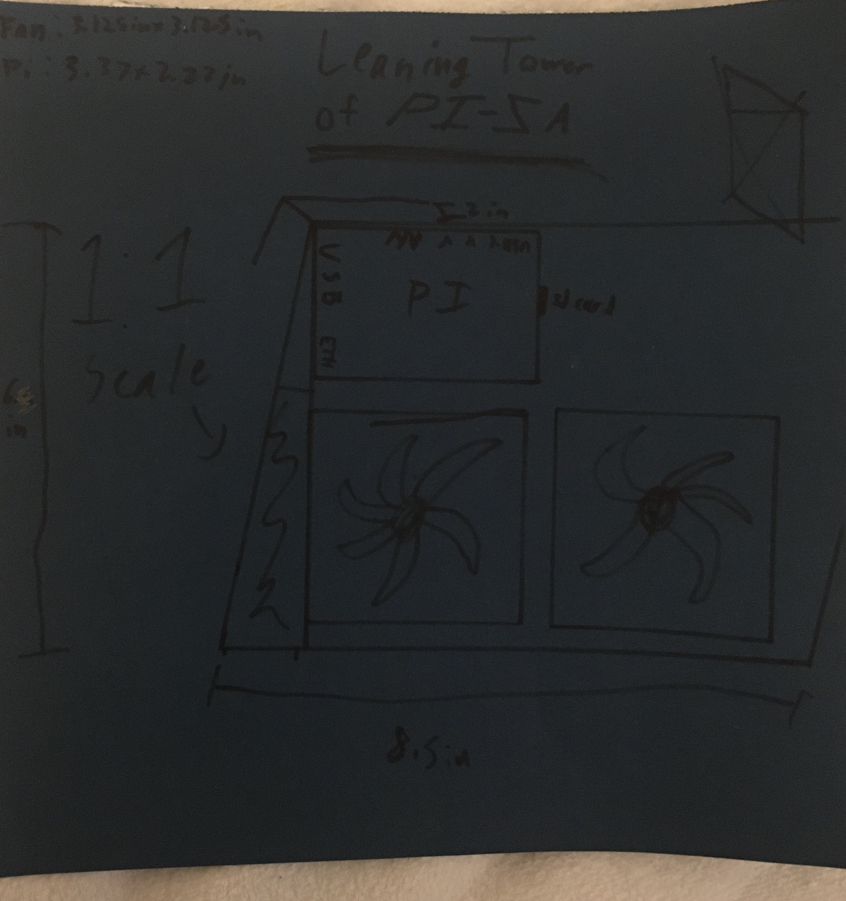

I have a Raspberry Pi which I use for retro gaming and web servers. If
you don't know what an Raspberry Pi is, it's a credit card-sized
computer that's used for hobby projects. I've been wanting to make a
casing/shell for it because I like customizing my things. I came up with
a bunch of styles such as a flat slab and a spherical design, but I
eventually settled on a hilarious pun: the Leaning Tower of Pi-sa. Get
it? Pisa but with a Raspberry Pi? *laughs in html/css* Well, I
thought it was funny. The case would look like a PC tower, but leaning
backwards, hence the name. Below is the original design (and yes I made a blueprint).

To be continued... mainly because I ran out of time writing this.